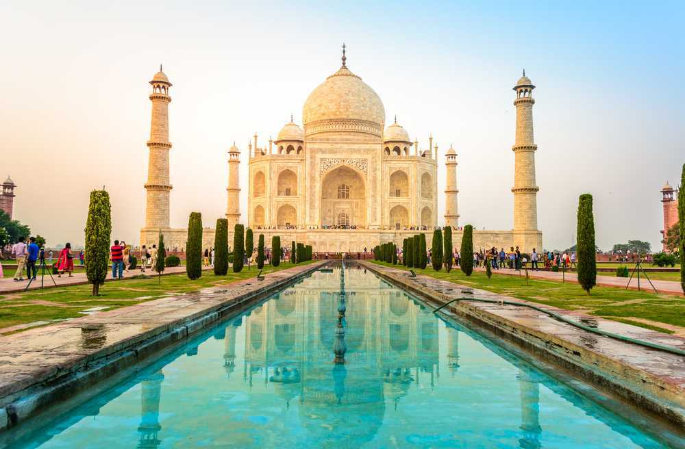
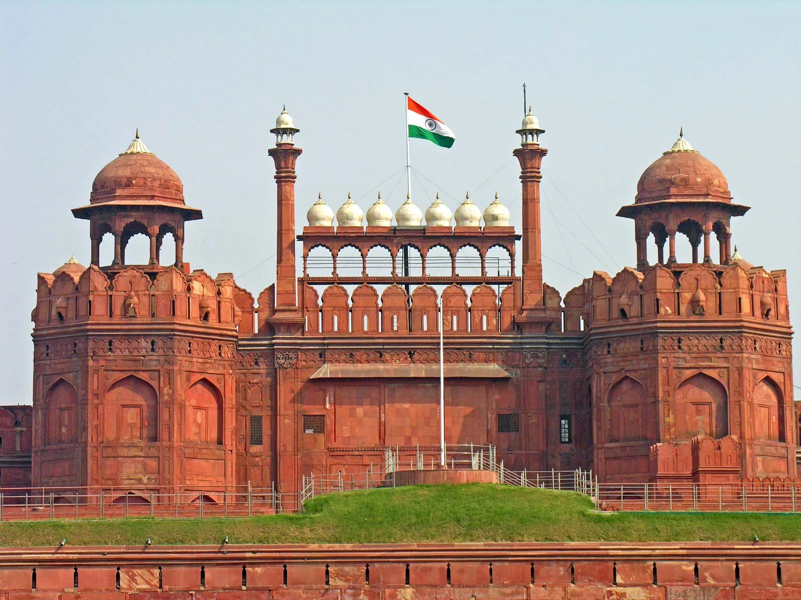
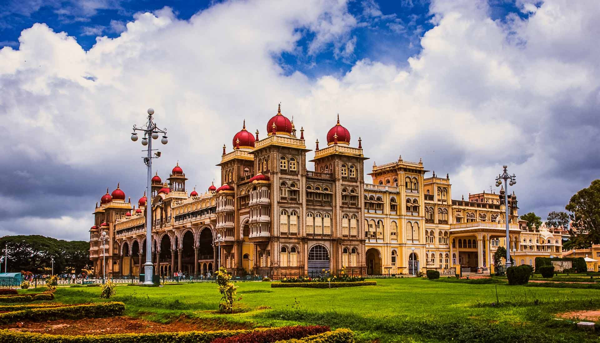

Brihadeeswarar Temple (Big Temple), Thanjavur is one of the most famous temples in Thanjavur. It was built by Raja Raja Chola I around 1010 CE during the Chola dynasty. The temple is dedicated to Lord Shiva and is also called Peruvudaiyar Kovil or Brihadheeswara Temple. It is famous for its huge vimanam (tower), which is about 66 meters high, and for its beautiful Chola architecture, stone carvings, and paintings. A special feature of the temple is the large Nandi statue carved from a single stone. The temple is also a UNESCO World Heritage Site and is part of the Great Living Chola Temple

Taj Mahal is a famous white marble monument located in Agra. It was built by Mughal Emperor Shah Jahan in memory of his wife Mumtaz Mahal. Construction started in 1632 and took about 22 years to complete. It is known for its beautiful Mughal architecture, large dome, gardens, and detailed marble work. The Taj Mahal is also a UNESCO World Heritage Site and is considered one of the Seven Wonders of the World.

Red Fort is a historic fort located in Delhi. It was built by Mughal Emperor Shah Jahan in 1648 using red sandstone, which is why it is called the Red Fort. It served as the main residence of the Mughal emperors for many years. The fort is famous for its massive walls, Mughal architecture, beautiful halls, and historical importance. It is also a UNESCO World Heritage Site. Every year on Independence Day, the Prime Minister of India hoists the national flag at the Red Fort.

Mysore Palace is a famous royal palace located in Mysuru. It was the official residence of the Wadiyar dynasty, the rulers of Mysore. The present palace was built in 1912 after the old wooden palace was destroyed by fire. It is well known for its grand architecture, beautiful domes, stained glass, carvings, and royal interiors. The palace looks especially stunning when it is illuminated with thousands of lights during festivals like Dasara. Mysore Palace is one of the most visited monuments in India.

India Gate is a famous war memorial located in New Delhi. It was built in memory of the Indian soldiers who died in World War I and the Third Anglo-Afghan War. The monument was designed by Sir Edwin Lutyens and completed in 1931. It is made of sandstone and stands as a symbol of bravery and sacrifice. The names of many soldiers are engraved on the monument. Near India Gate, the Amar Jawan Jyoti was built to honor unknown soldiers. It is one of the most popular landmarks in India.